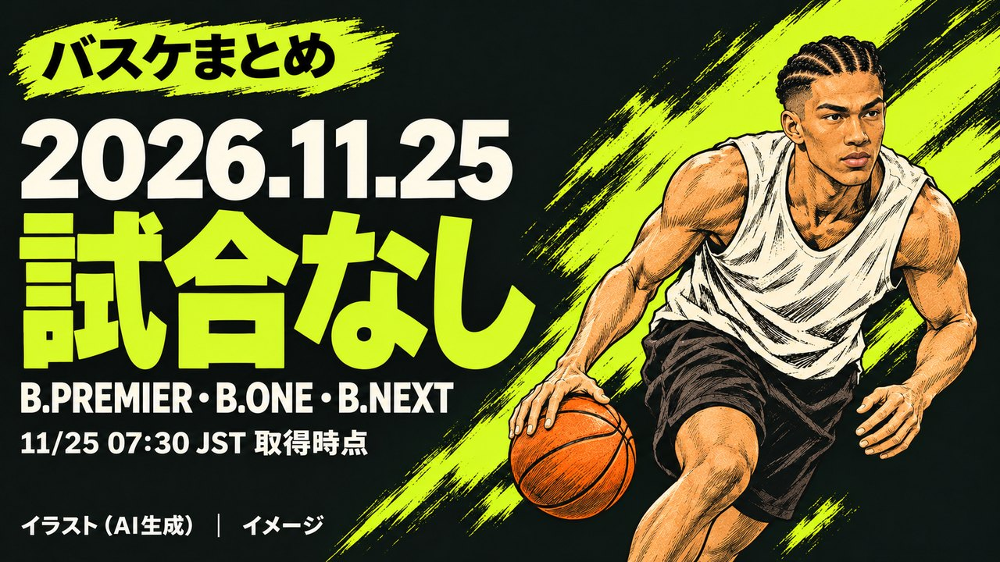
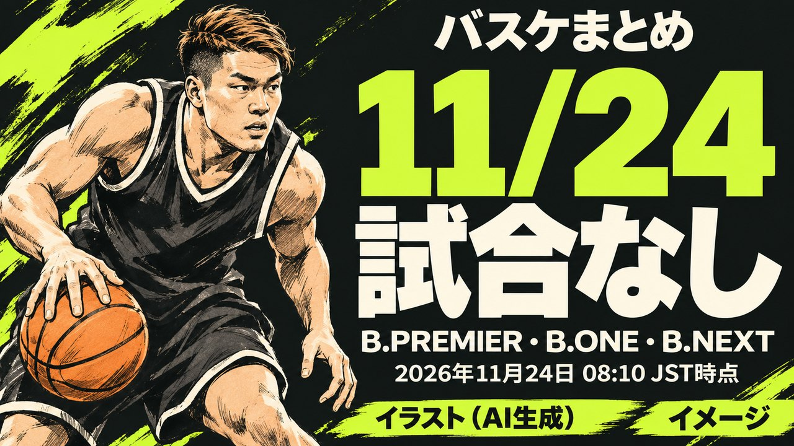
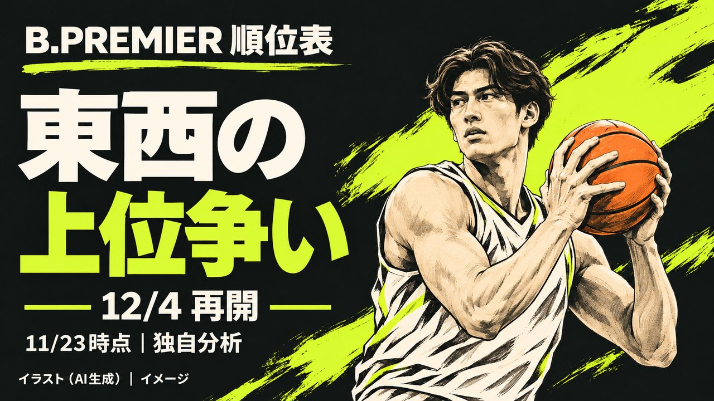
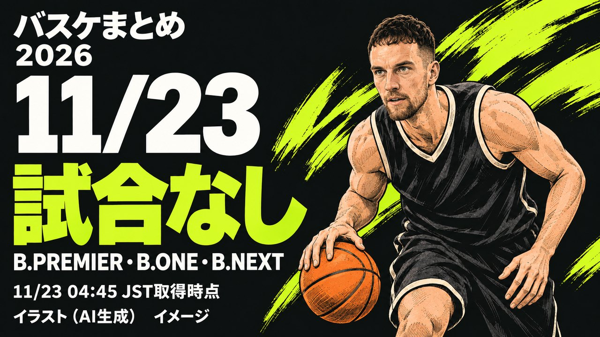
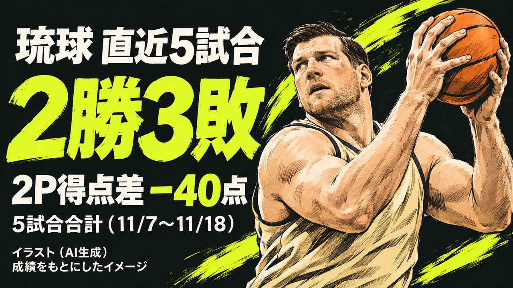
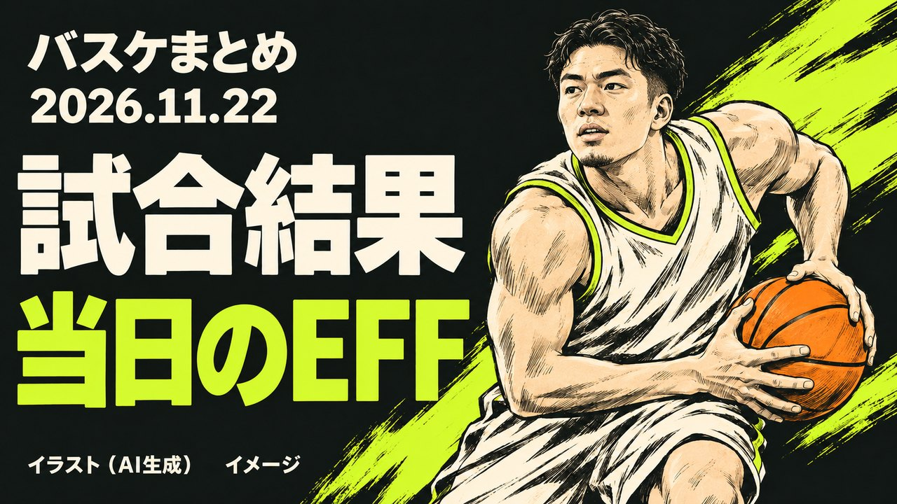
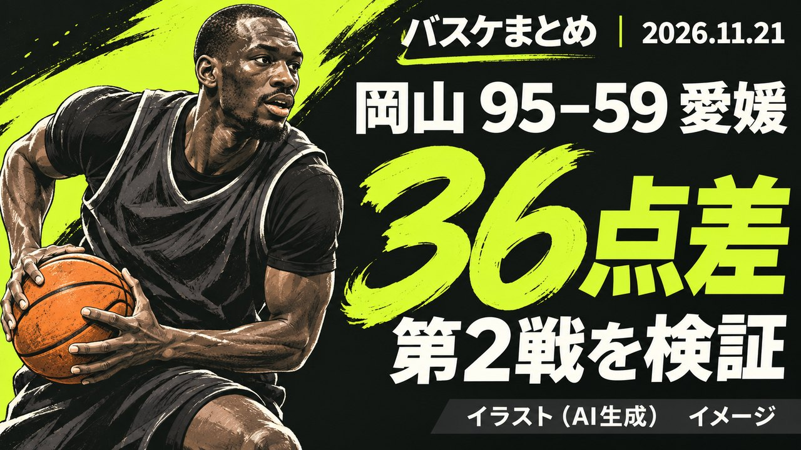
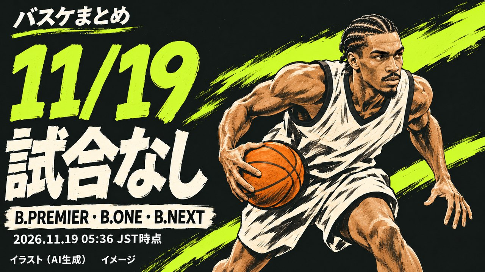

編集部まとめ記事 一覧

順位・日程
11/25 試合なし

順位・日程
千葉ジェッツ10勝10敗、得点はリーグ2位でも失点が2番目に多い

試合結果
レバンガ北海道の直近5試合をスタッツで分析 ペイント内の得点はリーグ1位、3Pは最少

速報
バスケ日本代表、W杯予選Window5のレバノン戦・カタール戦 日程と放送・合宿メンバー18名

順位・日程
11/24 試合なし

順位・日程
B.PREMIER順位表 東は仙台・群馬・A東京が接戦、西は名古屋と広島が先行

試合結果
大阪エヴェッサの直近5試合 攻撃の効率がリーグ最下位でターンオーバーも多い

順位・日程
11/23 試合なし

試合結果
熊本が横浜EXに2連勝、107-83と87-84の2試合を検証

試合結果
琉球ゴールデンキングスの直近5試合 2勝3敗で速攻はリーグ最少、2Pで40点差

試合結果
11/22 試合結果・当日のEFF

試合結果
越谷対青森は越谷が113-73で圧勝、試合前予測を検証

試合結果
川崎ブレイブサンダースの直近5試合は3勝2敗 オフェンスリバウンドとフリースローで3連勝

試合結果
11/21 試合結果・当日のEFF

試合結果
愛媛対岡山は岡山が95-59で連勝、36点差の第2戦を検証

試合結果
信州ブレイブウォリアーズの直近5試合 2勝3敗でターンオーバー割合はリーグ最多

試合結果
11/20 試合結果・当日のEFF

試合結果
愛媛対岡山を試合前予測、11連勝の岡山が有利

試合結果
神戸ストークスの直近5試合 1勝4敗の試合結果とスタッツ 失点の中心はペイント内

順位・日程
11/19 試合なし
最終更新: 2026年11月26日 01:43